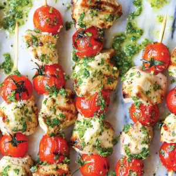

1. In a gallon size Ziploc bag or large bowl, combine chicken and pesto; marinate for at least 30 minutes to overnight, turning the bag occasionally. Drain chicken from the pesto.
2.Thread chicken and cherry tomatoes onto skewers; season with salt and pepper, to taste.
3.Preheat grill to medium high heat.
4. Add skewers to grill, and cook, turning occasionally, until the chicken is completely cooked through, reaching an internal temperature of 165 degrees F, about 10-12 minutes.
5.Serve immediately, garnished with parsley, if desired.